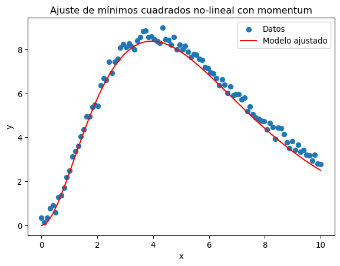

import jax.numpy as jnp
#Crear arrays
x = jnp.array([1, 2, 3])
y = jnp.array([4, 5, 6])An NVIDIA GPU may be present on this machine, but a CUDA-enabled jaxlib is not installed. Falling back to cpu.En esta clase discutiremos uno de los algoritmos de optimización más usados actualmente: El descenso de gradiente.
Este algoritmo se usa con éxito para ajustar modelos con billones de parámetros.
Nosotros, más humildemente, lo usaremos para hacer un ajuste de mínimos cuadrados.
Para lograrlo, usaremos una de las librerías más usadas actualmente: JAX.
JAX es una librería de python para cálculo de alto desempeño, usando CPU, GPU, o TPU. Tiene soporte para autodiferenciación así como compilación de código para hacerlo más rápido.
Compatibilidad con Numpy: Tiene varias funciones similares a las de Numpy con la misma sintaxis. Para usarlas se importa jax.numpy.
Diferenciación automática: Puede calcular el gradiente de funciones de python arbitrarias usando grad.
Compilación justo a tiempo (JIT): El código de python es lento porque es interpretado. JAX permite compilar código para hacerlo más rápido.
Soporte de GPU: Permite realizar algunos cálculos en la GPU para mayor eficiencia.
import jax.numpy as jnp
#Crear arrays
x = jnp.array([1, 2, 3])
y = jnp.array([4, 5, 6])An NVIDIA GPU may be present on this machine, but a CUDA-enabled jaxlib is not installed. Falling back to cpu.#Sumar arrays
z = x + y
print(z)[5 7 9]#Producto punto
a = jnp.dot(x, y)
print(a)32Así mismo, muchas de las cosas que hace numpy con sus arrays se pueden hacer con JAX, cambiando np por jnp.
gradimport jax
#Defina una función
def f(x):
return x**2 + 2*x + 1
#Calcule la derivada
df_dx = jax.grad(f)df_dx(3.0)Array(8., dtype=float32, weak_type=True)También podemos calcular gradientes de funciones de varios parámetros:
def g(x, y):
return x**2 + y**2 + x*y
grad_g = jax.grad(g, argnums=(0,1))
grad_x, grad_y = grad_g(3.0, 4.0)
print(grad_x, grad_y)10.0 11.0def f(x):
return jnp.sin(x) + jnp.cos(x)
f_jit = jax.jit(f)import time
x = jnp.linspace(0, 10, 100_000_000)# Se necesita ejecutar la función una vez para obligarla a compilar
f_jit(x)Array([ 1. , 1.0000001, 1.0000002, ..., -1.3830926, -1.3830926,
-1.3830926], dtype=float32)# Sin JIT
start = time.time()
f(x)
print(f"Sin JIT: {time.time() - start}")Sin JIT: 0.30278468132019043# Con JIT
start = time.time()
f_jit(x)
print(f"Con JIT: {time.time() - start}")Con JIT: 0.15223383903503418Nota: Esta no es la manera más precisa para medir tiempos. Es sólo para ilustrar que el código compilado es más rápido.
Este algoritmo busca el mínimo de una función de muchas variables. La idea es sencilla: La dirección del gradiente es la dirección en la cual la función cambia más rápidamente, entonces seguimos la dirección del gradiente. Si \(\vec{\theta}\) son los muchos parámetros, cambiamos el punto donde evaluamos la función de la siguiente manera a cada paso
\[ \vec{\theta}_{i + 1} = \vec{\theta}_i - \eta \nabla f(\vec{\theta}_i)\,. \]
El parámetro \(\eta\) se llama “razón de aprendizaje” (learning rate) porque este algoritmo se usa mucho en métodos de aprendizaje automático.
Nosotros lo aplicaremos en esta clase a un problema sencillo. Queremos ajustar una curva no lineal a unos datos con ruido. Para lograrlo aplicaremos el método de mínimos cuadrados de la clase pasada.
Vimos que si los parámetros de ajuste aparecen de forma lineal, basta resolver un sistema de ecuaciones. Cuando aparecen de forma no lineal tenemos que encontrar el mínimo de la suma de las desviaciones al cuadrado de alguna otra manera. Lo haremos con descenso de gradiente, donde nuestra función a minimizar es
\[ f(\vec{\theta}) = \sum_i (\hat{y}_{\vec{\theta}}(x_i)) - y_i)^2\,, \]
donde \(\hat{y}_{\vec{\theta}}\) es la función de ajuste que depende de los parámetros.
Los datos que vamos a ajustar vienen de una función no-lineal:
\[ y(x) = e^{-x/2}\,. \]
Creamos datos ficticios con un ruido:
import numpy as np
# Generar datos ficticios
np.random.seed(0)
x_data = np.linspace(0, 10, 100)
y_true = np.exp(-0.5 * x_data) # True model parameters
y_data = y_true + np.random.normal(0, 0.1, size=x_data.shape) # Add noiseEl modelo que queremos ajustar es
\[ \hat{y}_{\vec{\theta}}(x) = \theta_0e^{-\theta_1 x}\,. \]
def modelo(x, theta):
return theta[0]*jnp.exp(-theta[1]*x)Definimos primero la función a minimizar:
def suma_cuadrados(theta, x, y):
predicciones = modelo(x, theta)
return jnp.sum((y - predicciones)**2)El siguiente es un algoritmo sencillo de minimización por descenso de gradiente:
gradiente = jax.grad(suma_cuadrados)
def gradient_descent(theta, x, y, learning_rate=0.01, iterations=1000):
for i in range(iterations):
gradients = gradiente(theta, x, y)
theta = theta - learning_rate * gradients
# Imprimimos el resultado cada 100 iteraciones
if i % 100 == 0:
loss = suma_cuadrados(theta, x, y)
print(f"Iteración {i}, Suma cuadrados: {loss}")
return theta# Parámetros iniciales
theta_init = jnp.array([1.0, 1.0, 1.0])
# Descenso de gradiente
theta_opt = gradient_descent(theta_init, x_data, y_data, learning_rate=0.001, iterations=3000)
# Parámetros encontrados
print("Parámetros optimizados:", theta_opt)Iteración 0, Suma cuadrados: 2.8259427547454834
Iteración 100, Suma cuadrados: 0.9898320436477661
Iteración 200, Suma cuadrados: 0.9269558191299438
Iteración 300, Suma cuadrados: 0.9178450703620911
Iteración 400, Suma cuadrados: 0.9157513976097107
Iteración 500, Suma cuadrados: 0.9152856469154358
Iteración 600, Suma cuadrados: 0.9151836037635803
Iteración 700, Suma cuadrados: 0.9151614308357239
Iteración 800, Suma cuadrados: 0.9151566028594971
Iteración 900, Suma cuadrados: 0.9151556491851807
Iteración 1000, Suma cuadrados: 0.9151554107666016
Iteración 1100, Suma cuadrados: 0.915155291557312
Iteración 1200, Suma cuadrados: 0.915155291557312
Iteración 1300, Suma cuadrados: 0.915155291557312
Iteración 1400, Suma cuadrados: 0.9151553511619568
Iteración 1500, Suma cuadrados: 0.9151553511619568
Iteración 1600, Suma cuadrados: 0.9151553511619568
Iteración 1700, Suma cuadrados: 0.9151553511619568
Iteración 1800, Suma cuadrados: 0.9151553511619568
Iteración 1900, Suma cuadrados: 0.9151553511619568
Iteración 2000, Suma cuadrados: 0.9151553511619568
Iteración 2100, Suma cuadrados: 0.9151553511619568
Iteración 2200, Suma cuadrados: 0.9151553511619568
Iteración 2300, Suma cuadrados: 0.9151553511619568
Iteración 2400, Suma cuadrados: 0.9151553511619568
Iteración 2500, Suma cuadrados: 0.9151553511619568
Iteración 2600, Suma cuadrados: 0.9151553511619568
Iteración 2700, Suma cuadrados: 0.9151553511619568
Iteración 2800, Suma cuadrados: 0.9151553511619568
Iteración 2900, Suma cuadrados: 0.9151553511619568
Parámetros optimizados: [1.1409745 0.56464535 1. ]import matplotlib.pyplot as plt
plt.scatter(x_data, y_data, label="Datos")
plt.plot(x_data, modelo(x_data, theta_opt), color="red", label="Modelo ajustado")
plt.legend()
plt.xlabel('x')
plt.ylabel('y')
plt.title('Ajuste de mínimos cuadrados no lineal con descenso de gradiente')
plt.show()El algoritmo de descenso de gradiente visto arriba no funciona bien para muchos casos. Discutiremos algunas de las maneras de mejorarlo.
Para estos ejemplos usemos los siguientes datos:
\[ y(x) = (\theta_0 x)^2 e^{\theta_1 x} \]
# Generar datos ficticios
np.random.seed(0)
x_data = np.linspace(0, 10, 100)
y_true = (2*x_data)**2*np.exp(-x_data/2)
y_data = y_true + np.random.normal(0, 0.2, size=x_data.shape)
def modelo(x, theta):
return (theta[0]*x)**2*jnp.exp(-theta[1]*x)
def suma_cuadrados(theta, x, y):
predicciones = modelo(x, theta)
return jnp.sum((y - predicciones)**2)
gradiente = jax.grad(suma_cuadrados)
def gradient_descent(theta, x, y, learning_rate=0.01, iterations=1000):
for i in range(iterations):
gradients = gradiente(theta, x, y)
theta = theta - learning_rate * gradients
# Imprimimos el resultado cada 100 iteraciones
if i % 100 == 0:
loss = suma_cuadrados(theta, x, y)
print(f"Iteración {i}, Suma cuadrados: {loss}")
return theta
# Parámetros iniciales
theta_init = jnp.array([1.0, 1.0])
# Descenso de gradiente
theta_opt = gradient_descent(theta_init, x_data, y_data, learning_rate=0.001, iterations=3000)
# Parámetros encontrados
print("Parámetros optimizados:", theta_opt)Iteración 0, Suma cuadrados: 21042.046875
Iteración 100, Suma cuadrados: 3676.298583984375
Iteración 200, Suma cuadrados: 3676.298583984375
Iteración 300, Suma cuadrados: 3676.298583984375
Iteración 400, Suma cuadrados: 3676.298583984375
Iteración 500, Suma cuadrados: 3676.298583984375
Iteración 600, Suma cuadrados: 3676.298583984375
Iteración 700, Suma cuadrados: 3676.298583984375
Iteración 800, Suma cuadrados: 3676.298583984375
Iteración 900, Suma cuadrados: 3676.298583984375
Iteración 1000, Suma cuadrados: 3676.298583984375
Iteración 1100, Suma cuadrados: 3676.298583984375
Iteración 1200, Suma cuadrados: 3676.298583984375
Iteración 1300, Suma cuadrados: 3676.298583984375
Iteración 1400, Suma cuadrados: 3676.298583984375
Iteración 1500, Suma cuadrados: 3676.298583984375
Iteración 1600, Suma cuadrados: 3676.298583984375
Iteración 1700, Suma cuadrados: 3676.298583984375
Iteración 1800, Suma cuadrados: 3676.298583984375
Iteración 1900, Suma cuadrados: 3676.298583984375
Iteración 2000, Suma cuadrados: 3676.298583984375
Iteración 2100, Suma cuadrados: 3676.298583984375
Iteración 2200, Suma cuadrados: 3676.298583984375
Iteración 2300, Suma cuadrados: 3676.298583984375
Iteración 2400, Suma cuadrados: 3676.298583984375
Iteración 2500, Suma cuadrados: 3676.298583984375
Iteración 2600, Suma cuadrados: 3676.298583984375
Iteración 2700, Suma cuadrados: 3676.298583984375
Iteración 2800, Suma cuadrados: 3676.298583984375
Iteración 2900, Suma cuadrados: 3676.298583984375
Parámetros optimizados: [-72.194016 414.01147 ]plt.scatter(x_data, y_data, label="Datos")
plt.plot(x_data, modelo(x_data, theta_opt), color="red", label="Modelo ajustado")
plt.legend()
plt.xlabel('x')
plt.ylabel('y')
plt.title('Ajuste de mínimos cuadrados no lineal con descenso de gradiente')
plt.show()
Para ver lo que ocurre, grafiquemos la función de pérdida
Cuando se minimizan funciones de varias dimensiones, con frecuencia tienen múltiples mínimos locales.
El descenso de gradiente mostrado arriba se quedará atascado en esos mínimos locales.
Para evitarlo, podemos imaginar una bolita que rueda por una pendiente. Esta no se atasca en pequeños huecos porque su momentum la ayuda a continuar. Podemos agregarle también un momentum a la velocidad del descenso de gradiente:
\[ \vec{m}_{t+1} = \beta\vec{m}_t - \eta \nabla f(\vec{\theta_t})\,, \] \[ \vec{\theta}_{t+1} = \vec{\theta}_t + \vec{m}_{t+1}\,. \]
Escribamos un código que lo implemente en JAX
def gradient_descent_momentum(theta, x, y, learning_rate=0.001, momentum=0.9, iterations=1000):
velocity = jnp.zeros_like(theta) # Inicializar el término de velocidad
for i in range(iterations):
gradients = gradiente(theta, x, y)
velocity = momentum * velocity - learning_rate * gradients
theta = theta + velocity
if i % 100 == 0:
loss = suma_cuadrados(theta, x, y)
print(f"Iteración {i}, Suma cuadrados: {loss}")
return theta# Parámetros iniciales
theta_init = jnp.array([1.0, 1.0])
# Descenso de gradiente
theta_opt = gradient_descent_momentum(theta_init, x_data, y_data, learning_rate=0.001, iterations=3000)
# Parámetros encontrados
print("Parámetros optimizados:", theta_opt)
plt.scatter(x_data, y_data, label="Datos")
plt.plot(x_data, modelo(x_data, theta_opt), color="red", label="Modelo ajustado")
plt.legend()
plt.xlabel('x')
plt.ylabel('y')
plt.title('Ajuste de mínimos cuadrados no-lineal con momentum')
plt.show()Iteración 0, Suma cuadrados: 21042.046875
Iteración 100, Suma cuadrados: 3676.298583984375
Iteración 200, Suma cuadrados: 3676.298583984375
Iteración 300, Suma cuadrados: 3676.298583984375
Iteración 400, Suma cuadrados: 3676.298583984375
Iteración 500, Suma cuadrados: 3676.298583984375
Iteración 600, Suma cuadrados: 3676.298583984375
Iteración 700, Suma cuadrados: 3676.298583984375
Iteración 800, Suma cuadrados: 3676.298583984375
Iteración 900, Suma cuadrados: 3676.298583984375
Iteración 1000, Suma cuadrados: 3676.298583984375
Iteración 1100, Suma cuadrados: 3676.298583984375
Iteración 1200, Suma cuadrados: 3676.298583984375
Iteración 1300, Suma cuadrados: 3676.298583984375
Iteración 1400, Suma cuadrados: 3676.298583984375
Iteración 1500, Suma cuadrados: 3676.298583984375
Iteración 1600, Suma cuadrados: 3676.298583984375
Iteración 1700, Suma cuadrados: 3676.298583984375
Iteración 1800, Suma cuadrados: 3676.298583984375
Iteración 1900, Suma cuadrados: 3676.298583984375
Iteración 2000, Suma cuadrados: 3676.298583984375
Iteración 2100, Suma cuadrados: 3676.298583984375
Iteración 2200, Suma cuadrados: 3676.298583984375
Iteración 2300, Suma cuadrados: 3676.298583984375
Iteración 2400, Suma cuadrados: 3676.298583984375
Iteración 2500, Suma cuadrados: 3676.298583984375
Iteración 2600, Suma cuadrados: 3676.298583984375
Iteración 2700, Suma cuadrados: 3676.298583984375
Iteración 2800, Suma cuadrados: 3676.298583984375
Iteración 2900, Suma cuadrados: 3676.298583984375
Parámetros optimizados: [-730.93976 4131.1123 ]
A veces el gradiente sigue la dirección más empinada. Pero esto puede hacer que termine oscilando alrededor de un “valle”.
Para evitar eso, se introdujo un término que reduce la dirección más empinada:
\[ \begin{align} \vec{s}_{i+1} &= \rho\vec{s}_i + (1 - \rho)\nabla_{\vec{\theta}}f \otimes \nabla_{\vec{\theta}}f\,,\\ \vec{\theta} &\leftarrow \vec{\theta} - \eta\nabla_{\vec{\theta}}f\oslash\sqrt{\vec{s} \oplus \epsilon}\,, \end{align} \]
donde \(\otimes\), \(\oplus\) \(\oslash\) son la suma, multiplicación y división elemento por elemento de cada array.
def gradient_descent_rmsprop(theta, x, y, learning_rate=0.001, beta=0.9, epsilon=1e-8, iterations=1000):
cache = jnp.zeros_like(theta)
for i in range(iterations):
grads = gradiente(theta, x, y)
cache = beta * cache + (1 - beta) * (grads ** 2) # Actualizar la media móvil de los gradientes al cuadrado
theta = theta - learning_rate * grads / (jnp.sqrt(cache) + epsilon) # Actualizar los parámetros
if i % 100 == 0:
loss = suma_cuadrados(theta, x, y)
print(f"Iteración {i}, Suma cuadrados: {loss}")
return theta# Parámetros iniciales
theta_init = jnp.array([1.0, 1.0, 1.0])
# Descenso de gradiente
theta_opt = gradient_descent_rmsprop(theta_init, x_data, y_data, learning_rate=0.001, iterations=3000)
# Parámetros encontrados
print("Parámetros optimizados:", theta_opt)
plt.scatter(x_data, y_data, label="Datos")
plt.plot(x_data, modelo(x_data, theta_opt), color="red", label="Modelo ajustado")
plt.legend()
plt.xlabel('x')
plt.ylabel('y')
plt.title('Ajuste de mínimos cuadrados no-lineal con momentum')
plt.show()Iteración 0, Suma cuadrados: 3429.28564453125
Iteración 100, Suma cuadrados: 3235.61865234375
Iteración 200, Suma cuadrados: 2916.4580078125
Iteración 300, Suma cuadrados: 2370.6962890625
Iteración 400, Suma cuadrados: 1490.12548828125
Iteración 500, Suma cuadrados: 401.747802734375
Iteración 600, Suma cuadrados: 90.45291137695312
Iteración 700, Suma cuadrados: 51.823265075683594
Iteración 800, Suma cuadrados: 25.26919937133789
Iteración 900, Suma cuadrados: 9.870442390441895
Iteración 1000, Suma cuadrados: 4.351919174194336
Iteración 1100, Suma cuadrados: 4.078932762145996
Iteración 1200, Suma cuadrados: 4.078771591186523
Iteración 1300, Suma cuadrados: 4.0787553787231445
Iteración 1400, Suma cuadrados: 4.078762054443359
Iteración 1500, Suma cuadrados: 4.078766345977783
Iteración 1600, Suma cuadrados: 4.078766345977783
Iteración 1700, Suma cuadrados: 4.078766345977783
Iteración 1800, Suma cuadrados: 4.078766345977783
Iteración 1900, Suma cuadrados: 4.078762054443359
Iteración 2000, Suma cuadrados: 4.0787553787231445
Iteración 2100, Suma cuadrados: 4.078762054443359
Iteración 2200, Suma cuadrados: 4.078766345977783
Iteración 2300, Suma cuadrados: 4.078766345977783
Iteración 2400, Suma cuadrados: 4.078766345977783
Iteración 2500, Suma cuadrados: 4.078766345977783
Iteración 2600, Suma cuadrados: 4.078762054443359
Iteración 2700, Suma cuadrados: 4.0787553787231445
Iteración 2800, Suma cuadrados: 4.078762054443359
Iteración 2900, Suma cuadrados: 4.078766345977783
Parámetros optimizados: [1.9991218 0.49982956 1. ]
Este y sus derivados es uno de los algoritmos más usados actualmente.
Este método adaptativo combina momentum con RMSprop
\[ \begin{align} \vec{m}_{i+1} &= \beta_1 \vec{m}_i - (1 - \beta_1) \nabla_{\vec{\theta}}f(\vec{\theta})\,,\\ \vec{s}_{i+1} &= \beta_2\vec{s}_i + (1 - \beta_2)\nabla_{\vec{\theta}}f \otimes \nabla_{\vec{\theta}}f\,,\\ \hat{\vec{m}}_{i+1} & = \frac{\vec{m}_{i+1}}{1 - (\beta_1)^i}\,,\\ \hat{\vec{s}}_{i+1} & = \frac{\vec{s}_{i+1}}{1 - (\beta_2)^i}\,,\\ \vec{\theta}_{i+1} &= \vec{\theta}_i - \eta\hat{\vec{m}}_{i+1}\oslash\sqrt{\hat{\vec{s}}_{i+1} \oplus \epsilon} \end{align} \]
El tercer y cuarto pasos sirven para hacer que \(\vec{m}\) y \(\vec{s}\) no sean demasiado pequeños durante las primeras iteraciones. De otra forma tenderán a estar cercanos a \(0\) ya que ese es su valor inicial.
def gradient_descent_adam(theta, x, y, learning_rate=0.001, beta1=0.9, beta2=0.999, epsilon=1e-8, iterations=1000):
m, v = jnp.zeros_like(theta), jnp.zeros_like(theta)
for t in range(1, iterations + 1):
grads = gradiente(theta, x, y)
m = beta1 * m + (1 - beta1) * grads
v = beta2 * v + (1 - beta2) * (grads ** 2)
m_hat = m / (1 - beta1 ** t)
v_hat = v / (1 - beta2 ** t)
theta = theta - learning_rate * m_hat / (jnp.sqrt(v_hat) + epsilon)
if t % 100 == 0:
loss = suma_cuadrados(theta, x, y)
print(f"Iteración {t}, Suma cuadrados: {loss}")
return theta# Parámetros iniciales
theta_init = jnp.array([1.0, 1.0, 1.0])
# Descenso de gradiente
theta_opt = gradient_descent_adam(theta_init, x_data, y_data, learning_rate=0.001, iterations=3000)
# Parámetros encontrados
print("Parámetros optimizados:", theta_opt)
plt.scatter(x_data, y_data, label="Datos")
plt.plot(x_data, modelo(x_data, theta_opt), color="red", label="Modelo ajustado")
plt.legend()
plt.xlabel('x')
plt.ylabel('y')
plt.title('Ajuste de mínimos cuadrados no-lineal con momentum')
plt.show()Iteración 100, Suma cuadrados: 3247.58837890625
Iteración 200, Suma cuadrados: 2781.5439453125
Iteración 300, Suma cuadrados: 1436.5238037109375
Iteración 400, Suma cuadrados: 125.83804321289062
Iteración 500, Suma cuadrados: 108.08612060546875
Iteración 600, Suma cuadrados: 91.434326171875
Iteración 700, Suma cuadrados: 76.28627014160156
Iteración 800, Suma cuadrados: 62.861900329589844
Iteración 900, Suma cuadrados: 51.22740173339844
Iteración 1000, Suma cuadrados: 41.343177795410156
Iteración 1100, Suma cuadrados: 33.09865188598633
Iteración 1200, Suma cuadrados: 26.340545654296875
Iteración 1300, Suma cuadrados: 20.89400863647461
Iteración 1400, Suma cuadrados: 16.57770538330078
Iteración 1500, Suma cuadrados: 13.214654922485352
Iteración 1600, Suma cuadrados: 10.63939094543457
Iteración 1700, Suma cuadrados: 8.70242691040039
Iteración 1800, Suma cuadrados: 7.272426605224609
Iteración 1900, Suma cuadrados: 6.237037658691406
Iteración 2000, Suma cuadrados: 5.502582550048828
Iteración 2100, Suma cuadrados: 4.9926910400390625
Iteración 2200, Suma cuadrados: 4.646664619445801
Iteración 2300, Suma cuadrados: 4.4174346923828125
Iteración 2400, Suma cuadrados: 4.26937198638916
Iteración 2500, Suma cuadrados: 4.176309585571289
Iteración 2600, Suma cuadrados: 4.119433879852295
Iteración 2700, Suma cuadrados: 4.085715293884277
Iteración 2800, Suma cuadrados: 4.06633996963501
Iteración 2900, Suma cuadrados: 4.055578231811523
Iteración 3000, Suma cuadrados: 4.049807548522949
Parámetros optimizados: [1.9952817 0.49972048 1. ]
Estos métodos están ya todos programados en varias librerías. Una de las más usadas con JAX es Flax.
Flax en general es una librería para aprendizaje automático con redes neuronales. Tiene también el descenso de gradiente.
from flax.training import train_state
import optax
class TrainState(train_state.TrainState):
params: jnp.ndarray
def create_train_state(params, learning_rate):
tx = optax.adam(learning_rate=0.1) # SGD con Momentum
return TrainState.create(apply_fn=None, params=params, tx=tx)
# Aplicar el descenso de gradiente por un paso
@jax.jit
def train_step(state, x, y):
def loss_fn_wrapper(params):
return suma_cuadrados(params, x, y)
grads = jax.grad(loss_fn_wrapper)(state.params)
new_state = state.apply_gradients(grads=grads)
return new_state
# Parámetros iniciales
theta_init = jnp.array([1.0, 1.0, 1.0, 1.0])
# Crear el estado a entrenar
learning_rate = 0.001
state = create_train_state(theta_init, learning_rate)
# Entrenamiento
iterations = 30000
for i in range(iterations):
state = train_step(state, x_data, y_data)
if i % 100 == 0:
loss = suma_cuadrados(state.params, x_data, y_data)
print(f"Iteración {i}, Suma cuadrados: {loss}")
theta_opt = state.params
print("Parámetros optimizados:", theta_opt)
plt.scatter(x_data, y_data, label="Datos")
plt.plot(x_data, modelo(x_data, theta_opt), color="red", label="Modelo ajustado")
plt.legend()
plt.xlabel('x')
plt.ylabel('y')
plt.title('Ajuste de mínimos cuadrados no-lineal con momentum')
plt.show()Iteración 0, Suma cuadrados: 3267.792724609375
Iteración 100, Suma cuadrados: 4.0442657470703125
Iteración 200, Suma cuadrados: 4.044096946716309
Iteración 300, Suma cuadrados: 4.04409122467041
Iteración 400, Suma cuadrados: 4.044095039367676
Iteración 500, Suma cuadrados: 4.044095516204834
Iteración 600, Suma cuadrados: 4.044095039367676
Iteración 700, Suma cuadrados: 4.044094085693359
Iteración 800, Suma cuadrados: 4.04409122467041
Iteración 900, Suma cuadrados: 4.044095039367676
Iteración 1000, Suma cuadrados: 4.044095039367676
Iteración 1100, Suma cuadrados: 4.04409122467041
Iteración 1200, Suma cuadrados: 4.04409122467041
Iteración 1300, Suma cuadrados: 4.044095039367676
Iteración 1400, Suma cuadrados: 4.04409122467041
Iteración 1500, Suma cuadrados: 4.044095039367676
Iteración 1600, Suma cuadrados: 4.044095039367676
Iteración 1700, Suma cuadrados: 4.044095039367676
Iteración 1800, Suma cuadrados: 4.044095039367676
Iteración 1900, Suma cuadrados: 4.044094085693359
Iteración 2000, Suma cuadrados: 4.044095039367676
Iteración 2100, Suma cuadrados: 4.04409122467041
Iteración 2200, Suma cuadrados: 4.044095039367676
Iteración 2300, Suma cuadrados: 4.04409122467041
Iteración 2400, Suma cuadrados: 4.044095039367676
Iteración 2500, Suma cuadrados: 4.04409122467041
Iteración 2600, Suma cuadrados: 4.04409122467041
Iteración 2700, Suma cuadrados: 4.044095039367676
Iteración 2800, Suma cuadrados: 4.044095039367676
Iteración 2900, Suma cuadrados: 5.471590995788574
Iteración 3000, Suma cuadrados: 4.045629501342773
Iteración 3100, Suma cuadrados: 4.046225070953369
Iteración 3200, Suma cuadrados: 4.121339797973633
Iteración 3300, Suma cuadrados: 6.206316947937012
Iteración 3400, Suma cuadrados: 4.071436882019043
Iteración 3500, Suma cuadrados: 5.57887077331543
Iteración 3600, Suma cuadrados: 6.284522533416748
Iteración 3700, Suma cuadrados: 4.072629928588867
Iteración 3800, Suma cuadrados: 4.14105224609375
Iteración 3900, Suma cuadrados: 4.619814872741699
Iteración 4000, Suma cuadrados: 6.086818218231201
Iteración 4100, Suma cuadrados: 5.390110969543457
Iteración 4200, Suma cuadrados: 4.494438171386719
Iteración 4300, Suma cuadrados: 4.305286407470703
Iteración 4400, Suma cuadrados: 4.045108795166016
Iteración 4500, Suma cuadrados: 4.082281112670898
Iteración 4600, Suma cuadrados: 4.154871940612793
Iteración 4700, Suma cuadrados: 7.406267166137695
Iteración 4800, Suma cuadrados: 4.285836219787598
Iteración 4900, Suma cuadrados: 4.426356315612793
Iteración 5000, Suma cuadrados: 10.884464263916016
Iteración 5100, Suma cuadrados: 5.174866676330566
Iteración 5200, Suma cuadrados: 4.076207160949707
Iteración 5300, Suma cuadrados: 6.2567548751831055
Iteración 5400, Suma cuadrados: 4.334840774536133
Iteración 5500, Suma cuadrados: 4.5783185958862305
Iteración 5600, Suma cuadrados: 5.041240215301514
Iteración 5700, Suma cuadrados: 4.548403739929199
Iteración 5800, Suma cuadrados: 4.1995134353637695
Iteración 5900, Suma cuadrados: 4.047691345214844
Iteración 6000, Suma cuadrados: 7.766546249389648
Iteración 6100, Suma cuadrados: 5.101372241973877
Iteración 6200, Suma cuadrados: 4.584712028503418
Iteración 6300, Suma cuadrados: 8.226726531982422
Iteración 6400, Suma cuadrados: 4.6013994216918945
Iteración 6500, Suma cuadrados: 4.727679252624512
Iteración 6600, Suma cuadrados: 4.347781181335449
Iteración 6700, Suma cuadrados: 4.181650638580322
Iteración 6800, Suma cuadrados: 4.263227462768555
Iteración 6900, Suma cuadrados: 4.52927827835083
Iteración 7000, Suma cuadrados: 4.246344566345215
Iteración 7100, Suma cuadrados: 6.417340278625488
Iteración 7200, Suma cuadrados: 5.166752815246582
Iteración 7300, Suma cuadrados: 4.220556259155273
Iteración 7400, Suma cuadrados: 5.387799263000488
Iteración 7500, Suma cuadrados: 5.238258361816406
Iteración 7600, Suma cuadrados: 4.062378406524658
Iteración 7700, Suma cuadrados: 4.832957744598389
Iteración 7800, Suma cuadrados: 4.256785869598389
Iteración 7900, Suma cuadrados: 4.119063854217529
Iteración 8000, Suma cuadrados: 5.263709545135498
Iteración 8100, Suma cuadrados: 5.915206432342529
Iteración 8200, Suma cuadrados: 4.315390586853027
Iteración 8300, Suma cuadrados: 4.220365524291992
Iteración 8400, Suma cuadrados: 4.06153678894043
Iteración 8500, Suma cuadrados: 4.368973731994629
Iteración 8600, Suma cuadrados: 4.623717308044434
Iteración 8700, Suma cuadrados: 5.786194801330566
Iteración 8800, Suma cuadrados: 4.525938987731934
Iteración 8900, Suma cuadrados: 4.059689521789551
Iteración 9000, Suma cuadrados: 4.502852439880371
Iteración 9100, Suma cuadrados: 4.507997035980225
Iteración 9200, Suma cuadrados: 4.5473480224609375
Iteración 9300, Suma cuadrados: 4.409025192260742
Iteración 9400, Suma cuadrados: 4.304195880889893
Iteración 9500, Suma cuadrados: 5.124032974243164
Iteración 9600, Suma cuadrados: 5.0498881340026855
Iteración 9700, Suma cuadrados: 4.810750961303711
Iteración 9800, Suma cuadrados: 4.192280292510986
Iteración 9900, Suma cuadrados: 4.429644584655762
Iteración 10000, Suma cuadrados: 5.923192977905273
Iteración 10100, Suma cuadrados: 4.153621673583984
Iteración 10200, Suma cuadrados: 4.137456893920898
Iteración 10300, Suma cuadrados: 5.773155212402344
Iteración 10400, Suma cuadrados: 4.047209739685059
Iteración 10500, Suma cuadrados: 4.082477569580078
Iteración 10600, Suma cuadrados: 5.268391132354736
Iteración 10700, Suma cuadrados: 4.422891139984131
Iteración 10800, Suma cuadrados: 4.758668899536133
Iteración 10900, Suma cuadrados: 4.056825637817383
Iteración 11000, Suma cuadrados: 4.147940635681152
Iteración 11100, Suma cuadrados: 4.312173843383789
Iteración 11200, Suma cuadrados: 4.435616493225098
Iteración 11300, Suma cuadrados: 4.4754109382629395
Iteración 11400, Suma cuadrados: 4.285840034484863
Iteración 11500, Suma cuadrados: 4.059900283813477
Iteración 11600, Suma cuadrados: 4.41378927230835
Iteración 11700, Suma cuadrados: 9.626407623291016
Iteración 11800, Suma cuadrados: 4.944194793701172
Iteración 11900, Suma cuadrados: 4.183115005493164
Iteración 12000, Suma cuadrados: 4.044503211975098
Iteración 12100, Suma cuadrados: 4.20684289932251
Iteración 12200, Suma cuadrados: 9.678367614746094
Iteración 12300, Suma cuadrados: 4.074411392211914
Iteración 12400, Suma cuadrados: 5.628018379211426
Iteración 12500, Suma cuadrados: 4.372136116027832
Iteración 12600, Suma cuadrados: 4.04418420791626
Iteración 12700, Suma cuadrados: 4.2814531326293945
Iteración 12800, Suma cuadrados: 5.68199348449707
Iteración 12900, Suma cuadrados: 4.346493244171143
Iteración 13000, Suma cuadrados: 4.40957498550415
Iteración 13100, Suma cuadrados: 4.045331954956055
Iteración 13200, Suma cuadrados: 4.239386558532715
Iteración 13300, Suma cuadrados: 4.047881603240967
Iteración 13400, Suma cuadrados: 4.12317419052124
Iteración 13500, Suma cuadrados: 5.263510704040527
Iteración 13600, Suma cuadrados: 4.7643141746521
Iteración 13700, Suma cuadrados: 4.814492225646973
Iteración 13800, Suma cuadrados: 4.081429958343506
Iteración 13900, Suma cuadrados: 6.026717185974121
Iteración 14000, Suma cuadrados: 4.047952651977539
Iteración 14100, Suma cuadrados: 4.708639621734619
Iteración 14200, Suma cuadrados: 6.692774772644043
Iteración 14300, Suma cuadrados: 6.118167400360107
Iteración 14400, Suma cuadrados: 4.373660564422607
Iteración 14500, Suma cuadrados: 8.632919311523438
Iteración 14600, Suma cuadrados: 5.144014835357666
Iteración 14700, Suma cuadrados: 4.6295061111450195
Iteración 14800, Suma cuadrados: 6.794267654418945
Iteración 14900, Suma cuadrados: 4.426146507263184
Iteración 15000, Suma cuadrados: 5.116991996765137
Iteración 15100, Suma cuadrados: 4.083767890930176
Iteración 15200, Suma cuadrados: 4.245124816894531
Iteración 15300, Suma cuadrados: 5.138859748840332
Iteración 15400, Suma cuadrados: 5.215333461761475
Iteración 15500, Suma cuadrados: 4.044112682342529
Iteración 15600, Suma cuadrados: 5.346697807312012
Iteración 15700, Suma cuadrados: 4.251892566680908
Iteración 15800, Suma cuadrados: 4.063446998596191
Iteración 15900, Suma cuadrados: 6.5082807540893555
Iteración 16000, Suma cuadrados: 4.681329727172852
Iteración 16100, Suma cuadrados: 4.596615791320801
Iteración 16200, Suma cuadrados: 4.428354263305664
Iteración 16300, Suma cuadrados: 5.403054714202881
Iteración 16400, Suma cuadrados: 4.2056474685668945
Iteración 16500, Suma cuadrados: 7.3341546058654785
Iteración 16600, Suma cuadrados: 4.370957374572754
Iteración 16700, Suma cuadrados: 4.233997344970703
Iteración 16800, Suma cuadrados: 4.1354851722717285
Iteración 16900, Suma cuadrados: 4.812607288360596
Iteración 17000, Suma cuadrados: 4.210143089294434
Iteración 17100, Suma cuadrados: 4.055096626281738
Iteración 17200, Suma cuadrados: 5.059120178222656
Iteración 17300, Suma cuadrados: 4.20456600189209
Iteración 17400, Suma cuadrados: 4.848971366882324
Iteración 17500, Suma cuadrados: 4.900928497314453
Iteración 17600, Suma cuadrados: 4.4938530921936035
Iteración 17700, Suma cuadrados: 4.390709400177002
Iteración 17800, Suma cuadrados: 4.295697212219238
Iteración 17900, Suma cuadrados: 4.051713466644287
Iteración 18000, Suma cuadrados: 4.343985080718994
Iteración 18100, Suma cuadrados: 4.195722579956055
Iteración 18200, Suma cuadrados: 4.573965549468994
Iteración 18300, Suma cuadrados: 4.2401933670043945
Iteración 18400, Suma cuadrados: 4.093889236450195
Iteración 18500, Suma cuadrados: 4.7867608070373535
Iteración 18600, Suma cuadrados: 4.097292900085449
Iteración 18700, Suma cuadrados: 4.626296043395996
Iteración 18800, Suma cuadrados: 4.167498588562012
Iteración 18900, Suma cuadrados: 5.856185436248779
Iteración 19000, Suma cuadrados: 4.079311847686768
Iteración 19100, Suma cuadrados: 9.900836944580078
Iteración 19200, Suma cuadrados: 4.97274923324585
Iteración 19300, Suma cuadrados: 4.190138339996338
Iteración 19400, Suma cuadrados: 4.0751800537109375
Iteración 19500, Suma cuadrados: 5.313701152801514
Iteración 19600, Suma cuadrados: 4.072208404541016
Iteración 19700, Suma cuadrados: 8.854387283325195
Iteración 19800, Suma cuadrados: 4.472643852233887
Iteración 19900, Suma cuadrados: 4.454446792602539
Iteración 20000, Suma cuadrados: 4.780727386474609
Iteración 20100, Suma cuadrados: 4.2121148109436035
Iteración 20200, Suma cuadrados: 4.067635536193848
Iteración 20300, Suma cuadrados: 5.082885265350342
Iteración 20400, Suma cuadrados: 4.555091857910156
Iteración 20500, Suma cuadrados: 4.940275192260742
Iteración 20600, Suma cuadrados: 5.421708106994629
Iteración 20700, Suma cuadrados: 4.050044059753418
Iteración 20800, Suma cuadrados: 4.343541622161865
Iteración 20900, Suma cuadrados: 7.68551778793335
Iteración 21000, Suma cuadrados: 4.170497894287109
Iteración 21100, Suma cuadrados: 4.600713729858398
Iteración 21200, Suma cuadrados: 4.378966331481934
Iteración 21300, Suma cuadrados: 4.20708703994751
Iteración 21400, Suma cuadrados: 5.880369186401367
Iteración 21500, Suma cuadrados: 4.059860706329346
Iteración 21600, Suma cuadrados: 4.196103572845459
Iteración 21700, Suma cuadrados: 4.058696746826172
Iteración 21800, Suma cuadrados: 4.13985538482666
Iteración 21900, Suma cuadrados: 4.187601089477539
Iteración 22000, Suma cuadrados: 4.339480876922607
Iteración 22100, Suma cuadrados: 4.164960861206055
Iteración 22200, Suma cuadrados: 4.6016387939453125
Iteración 22300, Suma cuadrados: 7.169179916381836
Iteración 22400, Suma cuadrados: 5.343267440795898
Iteración 22500, Suma cuadrados: 4.7581787109375
Iteración 22600, Suma cuadrados: 4.140371322631836
Iteración 22700, Suma cuadrados: 4.059388160705566
Iteración 22800, Suma cuadrados: 4.192390441894531
Iteración 22900, Suma cuadrados: 4.94191312789917
Iteración 23000, Suma cuadrados: 4.1551737785339355
Iteración 23100, Suma cuadrados: 4.069222927093506
Iteración 23200, Suma cuadrados: 5.591836929321289
Iteración 23300, Suma cuadrados: 4.134202480316162
Iteración 23400, Suma cuadrados: 4.411377906799316
Iteración 23500, Suma cuadrados: 4.502415180206299
Iteración 23600, Suma cuadrados: 4.908420085906982
Iteración 23700, Suma cuadrados: 4.119803428649902
Iteración 23800, Suma cuadrados: 7.129547119140625
Iteración 23900, Suma cuadrados: 4.695497512817383
Iteración 24000, Suma cuadrados: 5.4070611000061035
Iteración 24100, Suma cuadrados: 6.542568206787109
Iteración 24200, Suma cuadrados: 4.733626842498779
Iteración 24300, Suma cuadrados: 5.578272819519043
Iteración 24400, Suma cuadrados: 4.4180755615234375
Iteración 24500, Suma cuadrados: 5.89174747467041
Iteración 24600, Suma cuadrados: 4.58130407333374
Iteración 24700, Suma cuadrados: 4.404761791229248
Iteración 24800, Suma cuadrados: 4.058867931365967
Iteración 24900, Suma cuadrados: 4.170109748840332
Iteración 25000, Suma cuadrados: 6.572751998901367
Iteración 25100, Suma cuadrados: 4.447794437408447
Iteración 25200, Suma cuadrados: 4.948233604431152
Iteración 25300, Suma cuadrados: 4.970843315124512
Iteración 25400, Suma cuadrados: 5.208209991455078
Iteración 25500, Suma cuadrados: 4.484058380126953
Iteración 25600, Suma cuadrados: 4.1537933349609375
Iteración 25700, Suma cuadrados: 4.0455121994018555
Iteración 25800, Suma cuadrados: 4.0701727867126465
Iteración 25900, Suma cuadrados: 4.050625324249268
Iteración 26000, Suma cuadrados: 5.759308815002441
Iteración 26100, Suma cuadrados: 4.553588390350342
Iteración 26200, Suma cuadrados: 4.4373779296875
Iteración 26300, Suma cuadrados: 4.263930797576904
Iteración 26400, Suma cuadrados: 5.449954509735107
Iteración 26500, Suma cuadrados: 4.114926338195801
Iteración 26600, Suma cuadrados: 4.215481758117676
Iteración 26700, Suma cuadrados: 4.623934745788574
Iteración 26800, Suma cuadrados: 9.611564636230469
Iteración 26900, Suma cuadrados: 13.1351318359375
Iteración 27000, Suma cuadrados: 5.088671684265137
Iteración 27100, Suma cuadrados: 4.084439277648926
Iteración 27200, Suma cuadrados: 4.108346939086914
Iteración 27300, Suma cuadrados: 6.93508768081665
Iteración 27400, Suma cuadrados: 4.397321701049805
Iteración 27500, Suma cuadrados: 4.053285598754883
Iteración 27600, Suma cuadrados: 4.6691999435424805
Iteración 27700, Suma cuadrados: 4.287134647369385
Iteración 27800, Suma cuadrados: 4.231245994567871
Iteración 27900, Suma cuadrados: 4.058831214904785
Iteración 28000, Suma cuadrados: 5.806825637817383
Iteración 28100, Suma cuadrados: 5.941788673400879
Iteración 28200, Suma cuadrados: 9.367290496826172
Iteración 28300, Suma cuadrados: 5.442954063415527
Iteración 28400, Suma cuadrados: 4.472907543182373
Iteración 28500, Suma cuadrados: 4.532450199127197
Iteración 28600, Suma cuadrados: 4.1276702880859375
Iteración 28700, Suma cuadrados: 4.090008735656738
Iteración 28800, Suma cuadrados: 4.052028656005859
Iteración 28900, Suma cuadrados: 4.384111404418945
Iteración 29000, Suma cuadrados: 4.755672931671143
Iteración 29100, Suma cuadrados: 4.0585856437683105
Iteración 29200, Suma cuadrados: 8.51402473449707
Iteración 29300, Suma cuadrados: 4.990051746368408
Iteración 29400, Suma cuadrados: 4.056412696838379
Iteración 29500, Suma cuadrados: 7.491554260253906
Iteración 29600, Suma cuadrados: 4.52838134765625
Iteración 29700, Suma cuadrados: 5.4314045906066895
Iteración 29800, Suma cuadrados: 4.546317100524902
Iteración 29900, Suma cuadrados: 4.44674015045166
Parámetros optimizados: [2.0014644 0.49827138 1. 1. ]
Considere la función \(y_{\theta}(x) = (\theta x)^2\).
Generamos datos ficticios con el siguiente código:
np.random.seed(0)
x_data = np.linspace(0, 10, 30)
y_true = (x_data/2)**2
y_data = y_true + np.random.normal(0, 0.2, size=x_data.shape)Realice un descenso de gradiente para ajustar el valor de \(\theta\) empezando desde el punto \(\theta = 1\) y de nuevo desde el punto \(\theta = -1\). Explique la diferencia entre los resultados.
Considere la función \(y_{\theta}(x) = \cos(\theta x)\).
Generamos datos ficticios con el siguiente código:
np.random.seed(0)
x_data = np.linspace(0, 10, 100)
y_true = np.cos(2*x_data)
y_data = y_true + np.random.normal(0, 0.2, size=x_data.shape)Intente encontrar el valor de \(\theta\) ajustando los datos con mínimos cuadrados y descenso de gradiente partiendo del punto \(\theta=-1\).
Grafique la función de pérdida y explique el origen de la dificultad.
Para un cierto sistema el volumen está dado por \[ V(\theta_1, \theta_2) = \sinh(\theta_1^4 + \theta_2^2) - 1\,, \] donde \(\theta_1, \theta_2 \geq 0\).
Encuentre los valores de los parámetros para los cuales el volumen es mínimo.
Considere la función \(y_{\theta}(x) = (\theta x)^2 + 50\theta x\).
Generamos datos ficticios con el siguiente código:
np.random.seed(0)
x_data = np.linspace(0, 10, 30)
y_true = (x_data/2)**2 + 50*x_data/2
y_data = y_true + np.random.normal(0, 0.2, size=x_data.shape)Realice un descenso de gradiente para ajustar el valor de \(\theta\) empezando desde el punto \(\theta = 2\) y de nuevo desde el punto \(\theta = -9\). Explique la diferencia entre los resultados.
Considere la función \(y_{\theta}(x) = (\theta_0 x)^2 + (\theta_1x)^{-3}\).
Generamos datos ficticios con el siguiente código:
np.random.seed(0)
x_data = np.linspace(1, 10, 30)
y_true = (x_data/2)**-3 + x_data**2
y_data = y_true + np.random.normal(0, 0.2, size=x_data.shape)Realice un descenso de gradiente con varios métodos (gradiente sencillo y Adam) y explique la diferencia.